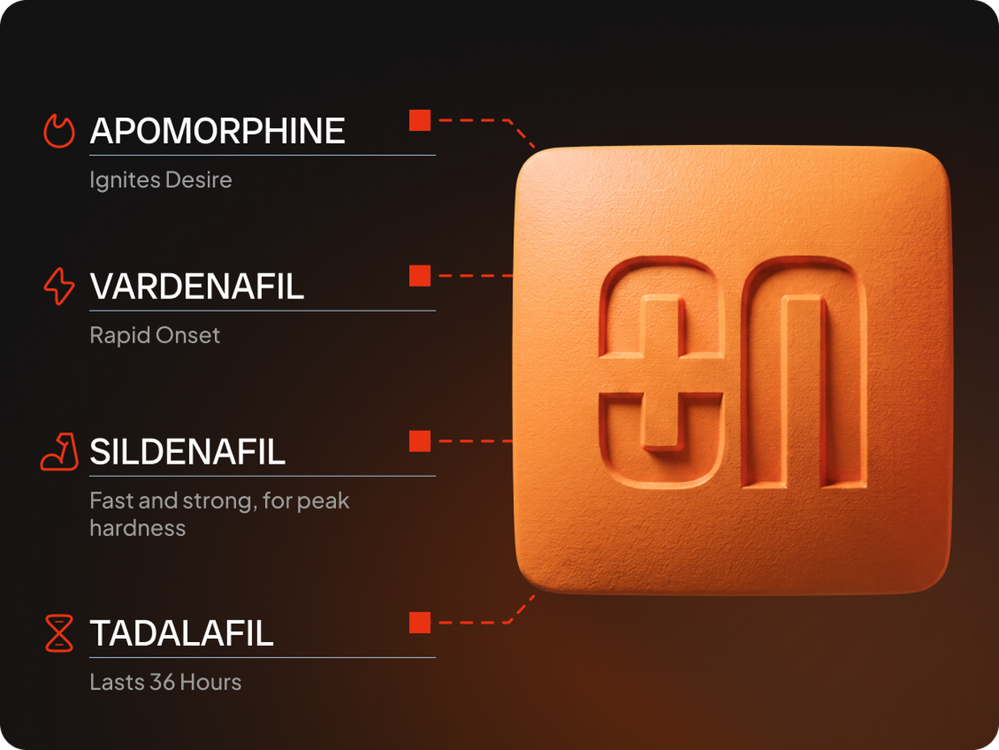

Life-changing, honestly
I didn't think I needed this and tried it mostly out of curiosity. My marriage went up about ten notches. I had no idea what I'd been missing.
— B.H.
BRAEVON 4-in-1. Arousal & performance. In minutes
See if BRAEVON is right for you.
Select your primary goal:
*Based on a survey of active Braevon patients.
I didn't think I needed this and tried it mostly out of curiosity. My marriage went up about ten notches. I had no idea what I'd been missing.
I really like how this makes me feel. It's just like the ad says — bigger, longer, stronger. Five stars, no notes.
Shipped fast and arrived unmarked, which matters when you've got teenagers in the house. I've tried the big-name pills and this is easily the better one.
Scroll for more →
Eligibility
Patients must be male (sex assigned at birth) and at least 18 years of age.
Sex assigned at birth
Date of birth
Eligibility
Our board-certified physicians use the information in the following questions to tailor your treatment.
All medications are prescribed by certified physicians. Your answers are private and HIPAA protected.
In the past 6 months
Your health
Performance factors
Select all that apply.
Your history
Please provide the treatment details to continue.
Your history
Please explain the side effects to continue.
Your history
Your history
Please explain the issues to continue.
Medical info
Please describe your condition or surgery history to continue.
Medical info
Please list your current medications to continue.
Medical info
Please list your known allergies to continue.
Medical info
Select all that apply.
Medical info
Select all that apply.
How frequently do you use them? When was the last time you used them?
Please explain your use of the drugs you selected to continue.
Medical info
Select all that apply.
Please tell us more about the diagnoses you selected to continue.
Medical info
Medical info
Medical info
Select all that apply.
Please tell us more about the conditions you selected to continue.
Medical info
Select all that apply.
Please tell us more about your leg cramps to continue.
Medical info
Please check all that apply.
When was your last Hemoglobin A1c checked and what was the value?
Please tell us more about your diabetes to continue.
Please tell us more about your high cholesterol to continue.
Please tell us more about your high blood pressure to continue.
Medical info
What does your blood pressure usually run?
If you're not sure, pick the one closest to your typical reading.
Estimated from your selection. Tap a number to enter your own reading.
Patients with this blood pressure may not be prescribed medication for this treatment.
Your health
Select all that apply.
Please describe your concern to continue.
Additional info
Please share the details to continue.
Patient info
Last thing we need before your physician review. Your information is protected by HIPAA.
Consent
Quick summary below. The full document is one tap away.

*On average, after the medication dissolves. Based on a survey of active Braevon patients.
APOmorphine + sildenafil over sildenafil alone*
*On average, after the medication dissolves. Based on a customer survey of active Braevon patients.
A licensed clinician will review your answers and confirm your plan. Nothing ships until they do.
Trusted by over 175,000 customers. Performance guaranteed.
Your safety is our priority. This treatment has specific medical criteria, and your answer means our clinicians cannot safely determine your eligibility.
If you entered something by mistake, go back and change it. If your answer was correct, please speak with your own doctor about other options.